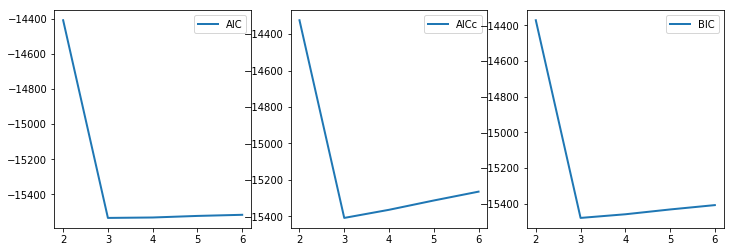

Lorentzian mixtures for H\(^1\)NMR¶
In [8]:
from Lorentzian import NMRFitting
class NMRFitting(object):
r"""Fitting NMR datas."""
def __init__(self, files, components_range,
n_mc_trials=10, n_samples=3000, shift=0, tol=0.01):
r"""Initialize.
Arguments:
files: a list of files of NMR datas
components_range: a touple of the range of how many peaks
n_mc_trials: default is 10. times that finding BIC
n_samples: default is 3000. samples used to find BIC
shift: default is 0. Set shift if you want to remove some components.
tol: Tolerance of ratio of negative areas after shift.
"""
def set_p0_bounds(self, p0=(0.5, 0.002, 3.7),
bounds=((0, 1e-4, 3.5), (1, 1e-1, 4.1))):
r"""Set p0 and bounds, defaults are for PEG.
Arguments:
p0: 1-d touple or list for area, peak_width and chemical shift
bounds: 2-d touple or list for the lower/upper value of area,
peak_width and chemical shift. +/-np.inf for no bounds.
Returns:
self
"""
def fitting(self, **kwargs):
r"""Fitting method.
kwargs: for `scipy.optimize.curv_fit`
"""
In [31]:
a_0_5 = NMRFitting(["../data/A-0.50-fitting.txt"], (2,7))
In [32]:
a_0_5.set_p0_bounds(p0=[0.5, 0.002, 3.7], bounds=[[0, 1e-4, 3.5], [1, 1e-1, 4.1]])
a_0_5 = a_0_5.fitting()
../utils/FitLSQ.py:77: UserWarning: p0 must EXACTLY match the base function!
UserWarning)
../utils/FitLSQ.py:50: UserWarning: Bounds must EXACTLY match the base function!
UserWarning)
Best estamation by AIC is 3
The parameters are: [0.233335 0.001504 3.701074 0.384682 0.034882 3.699284 0.418008 0.002058
3.698922]
Best estamation by AICc is 3
The parameters are: [0.233335 0.001504 3.701074 0.384682 0.034882 3.699284 0.418008 0.002058
3.698922]
Best estamation by BIC is 3
The parameters are: [0.233335 0.001504 3.701074 0.384682 0.034882 3.699284 0.418008 0.002058
3.698922]
The normalization factor is 1.0012, the original is 2.7394
In [34]:
%matplotlib inline
from pylab import *
fig = figure(figsize=(12,4))
ax1 = fig.add_subplot(131)
ax2 = fig.add_subplot(132)
ax3 = fig.add_subplot(133)
ax1.plot(range(2,7), a_0_5[0][0], label='AIC', lw=2)
ax1.legend()
ax2.plot(range(2,7), a_0_5[0][1], label='AICc', lw=2)
ax2.legend()
ax3.plot(range(2,7), a_0_5[0][2], label='BIC', lw=2)
ax3.legend()
Out[34]:
<matplotlib.legend.Legend at 0x7fc76216fc18>
